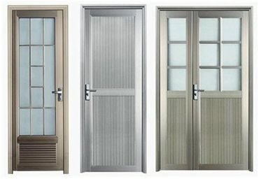

Jual Pintu Aluminium di Gorontalo – Komponen|Bagian} terpenting dari sebuah rumah. Semewah apapun rumah Anda, tanpa pintu, apa gunanya?. Salah satu tipe pintu yang paling populer ialah alumunium. Alternatif saja kelebihan kekurangan dan opsi variasi pintu aluminium?
Almunium Pintu Tidak Untuk Rumah Idaman
Pintu bermateial alumunium yaitu pilihan terbaik, entah itu diamati dari mutu maupun harganya. Kecuali ini dikarenakan pintu aluminium menawarkan pintu rumah yang tahan lama, bermutu tinggi serta mempunyai skor estetis sehingga memiliki tenaga tarik tersendiri. Pintu berbahan alminium bisa menahan beban berat yang cukup besar. Padahal hanya itu pintu alumunium ini juga tergolong ringan, konstan serta berfungsi sebagai sebuah perlindungan rumah paling pas.
Malah Anda yang selalu kritis dalam hal aksesori bangunan yang satu ini, pastinya akan mengakui kehandalan dan keunggulan pintu alumunium itu sendiri. Alternatif saat ini, berdasarkan pasar konstruksi itu sendiri pintu-alumunium telah mendapatkan popularitas. Pintu almunium sekarang juga tersedia ke dalam beraneka macam desain jadi benar-benar tepat diterapkan pada instalasi ruangan berbeda.
Kelebihan Kekurangan Dan Almunium Almunium Pintu Tak
Seperti kita ketahui, bahan material tradisional pembuatan pintu di zaman dulu ialah kayu dan logam. Pintu logam diandalkan memiliki karakteristik yang kokoh sehingga sanggup menawarkan proteksi terhadap pengaruh eksternal. Selain tersebut juga berlaku untuk pintu alumunium yang telah menjadi alternatif universal di seluruh keadaan. Pintu macam ini pun dapat diaplikasikan dalam bermacam ruangan serta dapat dikombinasikan bersama material lainnya seperti kaca, plastik dan kayu. Padahal cuma itu saja, pintu alumunium juga bendung dari perubahan suhu atau deformasi maupun kelembaban. Kelebihan kekurangan dan pilihan jenis pintu aluminium.
Keunggulan Pintu Aluiminium
Jendela dan pintu masuk adalah wajah bagi sebuah rumah atau bangunan. Contoh dari itu, benar-benar dibutuhkan untuk menetapkan desain yang sudah pantas diantara kedua bagian itu sendiri. Untuk mensupport fungsionalitas kedua bagian tadi, karenanya pintu almunium dapat dibuat alternative paling tepat, baik untuk bangunan kantor ataupun residensial atau perumahan.
Pintu ini diperkuat menggunakan profil almunium yang menjamin tingkat kehandalan tinggi. Teladan pintu almunium ini dirancang dengan ketahanan tingkat tinggi demi membendung muatan berat serta berperan sebagai garda paling depan untuk melindungi bangunan kantor maupun rumah.
Pintu almunium tergolong demikian itu populer dan banyak diterapkan tak cuma di Indonesia saja tapi juga di beragam negara hingga di seluruh dunia. Selain ini tentunya dikarenakan keunggulan dan kelebihan yang dimilikinya. Ada sebagian kelebihan pintu almunium diantaranya mempunyai nilai estetis, ramah terhadap lingkungan, mempunyai daya tahan tinggi, daya tinggi, isolasi suara bagus, tidak membutuhkan perawatan khusus dan bendung dari perubahan cuaca panas maupun dingin.
Teladan pintu almunium sendiri dapat dipasang pada perumahan, eksterior bangunan sampai bangunan komersial. Performa itu, banyak pakar yang memberi anjuran pintu berbahan alumunium ini dikarenakan mempunyai kualitas yang tinggi. Kelebihan kekurangan dan opsi variasi pintu almunium.
Sangat Mempunyai Kecuali Tinggi
Pintu aluminium biasanya ditandai dengan kehandalan dan energi tinggi. Sangat struktur yang bermuatan ringan tetapi anti terhadap stress atau tegangan mekanik. Kerja itu, pintu almunium juga mempunyai perawatan yang gampang.
Ramah Lingkungan
Baha alumunium tergolong bahan yang aman serta tidak memancarkan toksin atau zat membahayakan ke dalam lingkungan. Untuk itulah, kerap dijalankan penguasaan terhadap objek-objek konstruksi, dimana lazimnya bahan bangunan yang bersifat ekologis itu sendiri dikenakan prasyarat seperti itu ketaat. Pintu berbahan aluminium yang diaplikasikan untuk tujuan tertentu seperti kebakaran dan anti pencurian terpenting pada kasus darurat kapabel memberikan perlindungan secara maksimal baik bagi property yang ada di komponen dalam gedung ataupun untuk orang yang ada didalamnya.
Jika
Pembuatan pintu alumunium dengan teknologi modern sendiri memungkinkan untuk bisa menciptakan semua jenis solusi desain. Pada produksi desain sendiri umpamanya ada pengendalian ukuran standar, tidak menutup kemungkinan dapat dilaksanakan penambahan warna variasi apa saja, baik melalui pelapis laminating maupun pengecatan.
Ketahanan
Cuacara yang menjadi semakin tidak menentu ketika ini, tentunya tidak hanya membuat manusia gampang sakit. Padahal, hal tersebut juga berlaku bagi pintu. Tersebut bahan pintu yang digunakan tak kapabel membendung hempasan pergantian musim pancaroba, misalnya saja dengan bahan kayu yang biasa, tentunya bisa dipastikan bahwa pintu hal yang demikian lebih mudah rusak. Sementara, untuk pintu berbahan almunium sendiri tidak akan semacam itu terpengaruh sebab ketahanan aluminium kepada paparan temperatur ini terbilang kuat. Pun pada alhasil terdapat kerusakan, tentunya durasi ketahanan pintu aluminium sendiri relatif lebih awet dan bendung lama.
Disamping faktor cuaca, bisa juga diberi pengaruh oleh faktor alam yang lainnya yang bisa merusak pintu, seperti halnya serangan rayap atau hama. Pada pintu kayu, terlebih kayu umum rayap menjadi suatu keadaan sulit yang seperti itu riskan sehingga bisa membikin pintu lebih mudah rusak serta keropos jika diterapkan untuk rentang panjang. Selain ini tentunya tak akan Anda natural pada pintu aluminium, dimana rayap malahan tentunya tak akan dapat berkutik dengan ketahanan pintu alumunium ini. Selain hal yang demikian dikarenakan bahannya tak mudah rapuh dan alumunium sendiri bukan material yang umumnya dapat dikonsumsi rayap seperti halnya kayu.
Ketahanan Warna
Tanpa memakai pewarnaan secara khusus, pintu berbahan aluminium ini umumnya mempunyai warna modern dan menarik seperti chrome. Untuk itu, tidak sedikit orang yang tak memberikan cat kembali pada pintu alumunium hal yang demikian. Kecuali inilah yang menciptakan warna pintu almunium lebih bendung lama dan kuat. Pelbagai memang diharapkan, pintu berbahan alumunium ini dapat diberikan pula cat tambahan melalui warna-warna favorit. Performa itu, bahkan ada produk cat khusus disediakan untuk pintu almunium agar memiliki warna seperti pada pintu kayu.
Pemasangannya Model
Pemasangan pada pintu almunium sendiri, sebagian besar tak membutuhkan biaya tinggi dan bisa dilakukan dengan waktu yang singkat. Pintu almunium memungkinkan kita membuatnya menjadi beraneka ragam ragam pintu, bagus itu untuk pintu double ataupun pintu single, ataupun metode bukaan dalam ruangan ataupun di luar ruangan. Padahal hanya itu saja, pintu almunium bisa dimasukkan pada struktur fasad jendela dan kaca, taman, ataupun partisi pada kantor swasta atau kantor pemerintahan.
Transportasi
Material almunium ini relatif ringan sehingga sangat memudahkan orang-orang ketika ingin memindahkannya. Untuk para penjual seperti halnya warung material dan bangunan maupun spesialis penjual jenis pintu almunium, tentunya sungguh-sungguh terbantu dengan bahan alumunium ini, karena via bebannya yang lebih ringan tentunya tak akan menemukan kesusahan dalam hal transportasi untuk pengiriman pintu almunium ke alamat konsumennya. Kelebihan kekurangan dan alternatif variasi pintu alumunium.
Melainkan Alumunium Figur
Almunium dari modelnya sendiri, kebanyakan meniru standar di pabrik. Sedangkan padahal standar pabrik, umumnya figur yang dipakai ialah contoh dengan gaya Eropa. Untuk itu, tak ada salahnya kalau menggunakan pintu jenis ini karena modelnya telah didesain dengan figur-figur yang sedang trend kini.
Dari sebagian kekurangan dan kelebihan di atas, tentunya tidak salah jikalau Anda mencoba menerapkan dan memasang pintu alumunium di sebagian komponen ruangan bagus di dalam kantor, rumah ataupun daerah usaha Anda. Kelebihan kekurangan dan opsi variasi pintu almunium.
Almunium Desain Teladan Pintu Tak
Untuk ragam desain pintu almunium yang bisa Anda pilih diantaranya contoh pintu lipat, pintu single dan pintu double. Bisa Nikifour kontraktor Epoxy Lantai Karawang bahkan siap menolong Anda menentukan pintu yang ideal di rumah atau bangunan Anda. Pintu jenis alumunium ini diaplikasikan untuk bisa memegang desain pada pintu masuk, seperti pintu supermarket, kios-kios dan kantor.
Tetapi opsi cara profil dan warna, tentunya menjadi pilihan menarik untuk Anda aplikasikan di dalam ruangan. Kerja itu, pintu dalam gedung-gedung industri atau instansi medis, partisi kantor hingga pintu kantor malah dapat dijadikan untuk menjadi hiasan komplemen interior. Cara pintu geser berbahan alumunium bisa menjadi pelengkap sangat bagus bagi struktur bangunan lainnya.
Untuk desain sendiri, lazimnya Nikifour kontraktor Epoxy Lantai Karawang menerapkan almunium dengan profil dari bilik tunggal dengan tanpa mengaplikasikan sisipan thermo. Pada bagian atas pintu dapat diisi kaca, dengan ketebalan yang bervariasi mulai dari 4-6 mm. Untuk menempuh penampilan yang halus karenanya pintu geser dari bahan almunium ini dilengkapi kaca : bagus buram, tempered, transparan, lapis baja atau berwarna.
Adapun metode yang sudah disesuaikan bisa dilengkapi jendela dengan kaca ganda pada ketebalan 2,4 cm. Pada bagian bawahnya sudah dilengkapi oleh konstruksi dari sisipan kaca pada ketebalan 24 mm. Dimana kedua sisi tersebut diperkuat via pemakaian lembaran galvanis yang tipis dengan ketebalan cuma 0,55 mm. Ketika juga penutup PVC ditempatkan untuk ketebalan 4 mm. Kelebihan kekurangan dan opsi jenis pintu aluminium.
Melainkan Aluminium Kecuali Bukaan Pada Pintu Aluminum
Sementara itu, cara bukaan tipe pintu alumunium ini diantaranya :
Sliding/Pintu Geser
Untuk bisa menghemat space ruanga, karenanya tipe sliding pintu almunium begitu tepat digunakan pada ruangan terbatas. Variasi pintu dibuka tentunya tak akan memakan banyak space ruangan. Aluminium struktur dijamin dengan pembukaan rel komponen atas.
Ayunan
Pada tipe ini, jenis pintu yang telah terpasang dalam kusen dengan pemasangan khusus. Dimana metode pembukaannya sendiri hanya memungkinkan satu arah saja.
Pendulum Ayunan
Pada desain pintu model ini dilengkapi oleh engsel, beranda dan ambang batas. Katup dapat dibuka pada kedua arah sebab terdapat penutup lantai.
Pintu Geser Contoh Otomatis
Built in fotosel dapat memungkinkan pembukaan pintu dengan otomatis. Teladan pinti ini lazimnya digunakan pada zona-zona yang membutuhkan mobilitas tinggi. Desainnya sendiri disesuaikan pada pintu geser bahan alumunium dengan perlengkapan unit kekuatan darurat, dengan meliputi baterai. Kecuali tersebut betul-betul praktis pada kasus dimana lampu mati secara tiba-tiba, maka baterai bahkan seketika membuka pintu. Kerja itu, struktur bisa saja memiliki 1 majupun 2 daun pintu yang data digeser. Demi meminimalisir kerugian imbas panas serta mewujudkan keseimbangan termperatur yang baik karenanya dipraktekkan memasang teladan pintu ganda yang bisa memisahkan komponen ruang depan. Kelebihan kekurangan dan opsi jenis pintu alumunium.
Info Pemesanan: https://www.dis.or.id/jual/pintu-lipat-aluminium-gorontalo/